Iсторiя коледжу
1845–1866
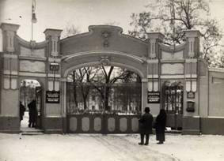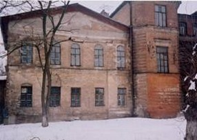
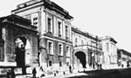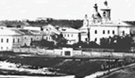
В період, що передував відкриттю першої на Українських землях фельдшерської школи (до 1845 р), лікарі самостійно готували собі помічників. Це були так звані «лекарские ученики». Ці учні не мали офіційно визнаної медичної освіти, але лікарі навчали їх готувати ліки, доглядати хворих, виконувати найпростіші лікарські призначення. Влітку учні збирали лікарські рослини для аптеки. Після закінчення такого навчання, за поданням лікаря, Лікарська Управа в присутності членів Приказу громадської опіки влаштовувала учням іспит та, залежно від його результатів, присвоювала учням–випускникам звання молодшого чи старшого фельдшера. Такий порядок зберігався і після відкриття фельдшерської школи, практично до кінця століття.
Фельдшером міг стати будь–який громадянин, який мав досвід практичної роботи в лікарні та самостійно вивчив необхідний курс предметів.
Прагнучи підняти рівень медичної допомоги населенню, губернатор Харкова Сергій Миколайович Муханов, згідно з вищезгаданим указом Сенату Російської імперії, приймає рішення про відкриття фельдшерської школи при Богоугодному закладі.
У школі навчалися учні як за рахунок казни, так і за власний кошт – «своекоштные». Фельдшерську школу очолював старший лікар.
На початку становлення у фельдшерській школі викладались російська та латинська мова, Закон Божий, арифметика, загальне поняття анатомії, фармакологія, правила догляду за хворими, віспощеплення.
Школа мала бібліотеку.
Вихованці фельдшерської школи в дообідні години займалися у класах, вивчаючи теоретичні предмети. В години так званих «візитацій» вони разом з лікарями заповнювали на пацієнтів «скорбные листы», які були введені у лікарнях Приказу з 1830 р. Клінічні і спеціальні предмети викладали лікарі, які практикували у цій же лікарні.
Повний курс навчання був розрахований на чотири роки та розділявся на два класи. Через два роки навчання учні складали іспит. Після закінчення повного курсу навчання Лікарська управа в присутності членів Приказу Громадської Опіки приймала іспит.
Випускник зобов’язаний був прослужити в закладах Приказу 6–10 років. Жити і працювати фельдшеру в ті часи було нелегко. Більшість лікарень не мали елементарних зручностей, необхідної кількості білизни, продуктів для харчування хворих, ліків, засобів догляду за хворими та іншого.
Збережені до введення земських медичних установ заклади Приказу Громадської Опіки були зразком організації медичної справи.
1866–1917
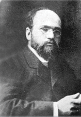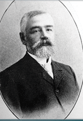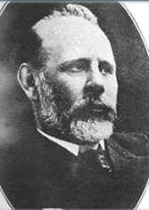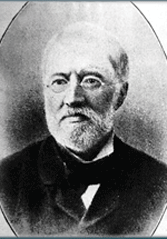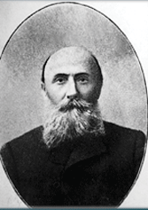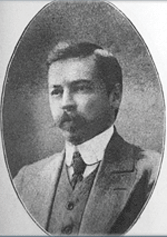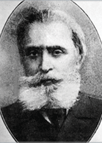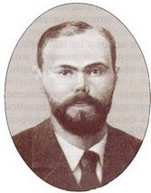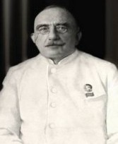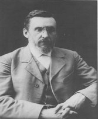
В середині XIX століття назріли великі соціально–політичні зміни. У 1861 р. скасовано кріпосне право. Темпи промислового розвитку приcкорювалися, зросла потреба в освічених людях. Медичне обслуговування населення почало здійснюватися земськими медичними закладами.Земствами було створено мережу губернських, повітових та дільничих лікарень, амбулаторій, фельдшерських пунктів, фельдшерських та акушерських шкіл.
У 1867 р. ліквідовується Харківський Приказ громадського опіки і фельдшерську школу підпорядковують Харківському губернському земству. Була створена спеціальна комісія по обстеженню закладів губернської лікарні, яка незабаром доповідала: «Вигляд цього закладу такий же, як і доля нещасних, які там утримуються і збуджує одне лише співчуття. Це не є лікарня, це божевільний дім; там немає умов для лікування, мистецтва дуже складного; тут потрібні великі кошти...».
Харківське земство починає реформування та реставрацію закладів колишнього Приказу, в т.ч. Фельдшерську школу.
Земський період в історії Харківської фельдшерської школи був одним із найбільш плідних. Увага органів влади, суттєве реформування організаційної структури та навчально–виховного процесу, зростання контингенту учнів – ось чим був наповнений цей період біографії фельдшерської школи.
З 1874 року Харківське земство дозволило приймати до фельдшерської школи учениць, встановивши для них 12 стипендій (по одній від кожного повіту). Вступаючи до школи, стипендіатки повинні були закінчити Земську Повивальну школу.
У 1888 році Харківська фельдшерська школа була помітним навчальним закладом.
1894 року видається новий Статут фельдшерських шкіл та удосконалено програму викладання.
Особливістю того часу було розмежування обов’язків старшого лікаря губернської лікарні та завідувача школою. Фельдшерська школа, як і раніше, була складовою частиною лікарні, але вже мала завідувачем окрему, спеціально призначену особу.
Наступним етапом у розвитку фельдшерської школи необхідно вважати кінець XIX століття, коли Міністерство внутрішніх справ (у підпорядкуванні якого знаходилися цивільні фельдшерські школи) затвердило нові навчальні програми (24 квітня 1897 року). Для цього Харківським губернським Земством утворюється компетентна комісія для всебічного вивчення питання про зміну програми викладання.
У травні 1907 р. кількість учнів в фельдшерській школі збільшено з 48 до 120 вихованців. В тому ж році школа перетворена із фельдшерської на фельдшерсько–акушерську.
Життя вихованців Харківської фельдшерсько–акушерської школи йшло за суворо pегламентованими «Правилами для учащихся Харьковской губернской Земской школы фельдшеров и акушерок».
15 січня 1916 р. було затверджено новий Статут Харківської губернської земської фельдшерсько–акушерської школи, який регламентував усі аспекти її діяльності.
Життя учнів не обмежувалося лише теоретичними та практичними заняттями. Учні школи, яка була частиною лікарняного комплексу, читали хворим художню літературу, влаштовували перегляд так званих «туманных картинок», ставили спектаклі, допомагали доглядати за садом поблизу лікарні. У школі влаштовувалися літературно–музичні зустрічі, концерти, виставки, ярмарки на користь незаможних.
Серед викладачів фельдшерсько–акушерської школи в цей час знаходимо імена професора Н. Ф. Мельникова–Развєдьонкова, М. А. Єршова, Ф. Ф. Добромислова, видатного медичного статиста С.Ігумнова. Земський період історії Харківської фельдшерської школи був насиченим та плідним. У школі одночасно навчалося до 150 учнів, щорічний випуск досягав 40 фельдшерів.
Вже на початку XX століття досвід викладання окремих предметів та системи підготовки фельдшерів у Харківській фельдшерсько–акушерській школі вивчався на зборах медичної громадськості – Пироговському медичному з’їзді у Петербурзі та з’їзді з проблем реформи середньої освіти у Москві . Діяльність Харківської фельдшерсько–акушерської школи була визнана не лише задовільною, але й такою, чий досвід та методи навчання заслуговують на вивчення і впровадження в інших навчальних закладах цього типу.
У 1913 р. на Всеросійській гігієнічній виставці у Петербурзі Харківська фельдшерсько–акушерська земська школа була відзначена срібною медаллю «... за предоставленные картограммы и журналы практических работ учеников за последние годы».
1917–1941
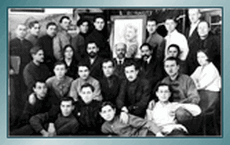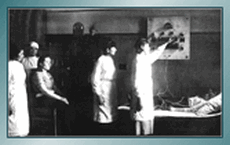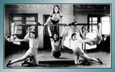
Харківська фельдшерсько–акушерська школа не припиняла свою діяльність навіть в умовах політичної і економічної нестабільності. Фінансування було відсутнє, система життєдіяльності міста фактично зруйнована. Харків стає столицею радянської України і викладачі Харківської фельдшерської школи беруть участь у організації Народного Комісаріату охорони здоров’я. В цей період фельдшерська школа неодноразово змінює своє підпорядкування і назву.
На початку 20–х років школа підпорядковується Головному Управлінню професійної освіти Наркомату освіти України і називається «Перші Харківські курси помічників лікарів» Наприкінці 20–х років назву навчального закладу відповідно до нових вимог змінюють на «Перший Харківський технікум «Єдиного диспансеру». В середині 30–тих років у зв’язку з тим, що на території колишньої губернської лікарні був організований Український науково–дослідний інститут психіатрії і неврології, у нашому навчальному закладі організовується підготовка фахівців нового напрямку – помічник лікаря – психоневролог, а школа отримує назву «Харківський психоневрологічний технікум». Але вже у 1936 році вирішили повернутися до перевіреної часом назви – фельдшерська школа.
У 1936/1937 н.р. тут навчається 389 чоловік, із них лише 83 – особи чоловічої статі. Жінки все більше займали середній сегмент системи охорони здоров’я. Директором школи стає Михайло Васильович Марченко, історик за фахом. Свою педагогічну діяльність він розпочинав у відомого українського педагога–новатора А.С.Макаренко. Майбутніх медичних спеціалістів готували 40 викладачів. Фельдшерська школа мала добре обладнаний анатомічний музей, бібліотеку з фондом 10000 примірників, сучасні кабінети гістології, шкірно–венерологічних хвороб, фізіотерапії, рентген–кабінет, клінічну лабораторію. Для учнів, які приїхали на навчання з інших місцевостей, працював гуртожиток. У школі діяв драматичний театр, оркестр духових інструментів, працювали спортивні секції.
У червні 1941 року Харківська фельдшерська школа зробила останній передвоєнний випуск – 117 фельдшерів. 5 серпня 1941 року рішенням Харківської обласної Ради депутатів трудящих «Про мережу середніх медичних шкіл Харківської області» була проведена реорганізація середніх закладів медичної освіти області, згідно з якою у Харкові залишився лише один заклад – Харківська фельдшерсько–акушерська школа з відділенням санітарних фельдшерів на базі Першої Харківської фельдшерської школи.
Але навчальний рік закінчився, практично не розпочавшись, у зв’язку з наближенням фронту. Діяльність навчального закладу була призупинена. У роки окупації приміщення Харківської фельдшерської школи, як і всього лікарняного містечка, було розграбовано і зруйновано.
1943–1960
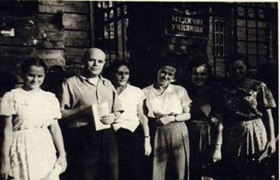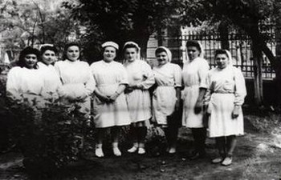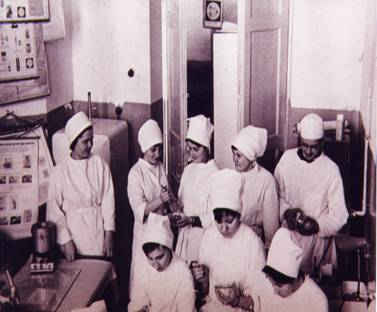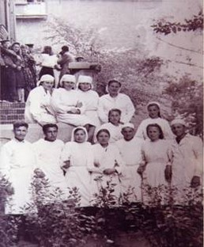
23 серпня 1943 року війська Степового фронту визволили місто Харків. Відновити діяльність Харківської фельдшерської школи на її колишньому місці було неможливо. Починається новий період історії навчального закладу – школа отримала приміщення в центральному районі міста. По вулиці Пушкінській в довоєнні роки діяла фельдшерсько–акушерська школа №2, яка веде свою історію від приватної медичної школи доктора Ряснянського. Вона розташовувалася в колишньому будинку поміщиці Філонової на вул. Дмитрівській (зараз тут розташоване Бюро судово–медичної експертизи). В 20–тих роках навчальний заклад перейменовується у Другі Харківські курси помічників лікарів, на початку 30–х років – у Другий Харківський медичний технікум «Єдиного диспансеру», в середині 30–х – у Харківську санітарно–фельдшерську школу. В приміщення по вул.Пушкінській, 27 школа переїхала напередодні війни. В довоєнний час в навчальному закладі працювали такі відомі та авторитетні лікарі–вчені, професори: П.Р.Ломакін, А.З.Цейтлін, І.І.Грищенко, С.Л.Утевська, А.Я.Альтгаузен. В роки окупації співробітники школи зуміли зберегти значну частину навчального і матеріального обладнання, що дало можливість вже 1 вересня 1943 року, через тиждень після визволення міста, відновити діяльність об’єднаних фельдшерських шкіл під назвою – Харківська фельдшерсько–акушерська школа. У вересні 1945 року з фронту повертається М.В.Марченко і значна частина викладачів фельдшерської школи з Сабурової дачі. Починається відродження слави навчального закладу.
Спочатку навчання розпочалися лише на фельдшерському і фармацевтичному відділеннях. В напівзруйнованому приміщенні працювали також зуботехнічна школа і протезний технікум. Незабаром школа розширила перелік спеціальностей: додалися медичні лаборанти і фельдшери–акушерки. У 1945/1946 н.р. у фельдшерсько–акушерській школі навчається 579 учнів. Не вистачало підручників, зошитів, було відсутнє парове опалення (опалення здійснювалося самими учнями за допомогою металевих діжок), учні голодували. Діти загиблих на фронті звільнялися від сплати за навчання.
Враховуючи гостру потребу у медичних спеціалістах, навчальний заклад збільшує кількість учнів до 700 чоловік. У 1947 році починається підготовка санітарних фельдшерів.
У 1946 році Харківській фельдшерсько–акушерській школі рішенням виконкому Харківської обласної Ради передається один з найкращих будинків міста – будинок колишнього Олександрівського притулку для дітей–сиріт (див. окрему сторінку сайту). До передачі школі тут знаходився військовий шпиталь, будівля знаходилася у дуже занедбаному стані. Після занять учні і викладачі ремонтували приміщення своїми силами.
1953 року Харківська фельдшерсько–акушерська школа отримує статус базового навчально–методичного центру для медичних шкіл регіону. 1954 року – одержує нову назву – Харківське базове медичне училище №1.
В післявоєнний час у медичному училищі діяв драматичний театр учнів і викладачів під керівництвом викладача мікробіології к.м.н. Н.Л.Утевського.
Харківське базове медичне училище №1 завжди було провідним не тільки у своєму регіоні, але і в Україні. Одним із першим колектив викладачів став проводити обласні науково–методичні конференції з актуальних проблем підготовки медичних фахівців. На базі медичного училища неодноразово проводилися республіканські і всесоюзні наради і конференції (1955, 1967, 1975 роки). У навчальному закладі працювали професори С.Л. і Н.Л.Утевські, В.І.Худорківський, к.м.н. Г.Д.Алтуєв, В.С.Ронін, Г.М.Старобінець, В.І.Савельєв, Ю.Н.Золотницький, Н.Ф.Головіна. Підручниками і навчальними посібниками, створеними викладачами нашого навчального закладу, користувалися студенти медичних училищ всієї країни.
Від викладачів не відставали і студенти. Щороку проводяться обласні студентські науково–практичні конференції за наслідками гурткової роботи. Участь у науково–пошуковій роботі в стінах медичного училища стало початком наукового шляху багатьох відомих вчених, серед яких двічі доктор наук, ректор Українського фармацевтичного університету В.П.Черних, завідуючі кафедрами Харківського медичного університету д.м.н. М.Г.Богдашкін, М.П.Бурих, Ю.Ю.Мікулінський та інші.
У 1966 році медичне училище №1 закінчила Є.І.Таранська, яка нагороджена найвищою відзнакою Міжнародного Товариства Червоного Хреста – медаллю Флоренс Найтінгейл (у 1997 році).
Сучасний этап розвитку
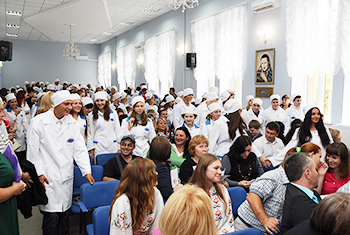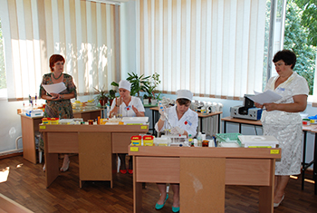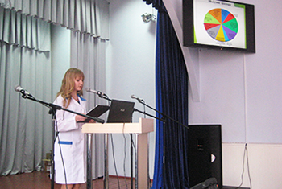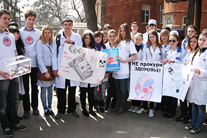
Розвиток мережі закладів охорони здоров’я вимагав збільшення кількості фахівців середньої ланки. Контингент студентів Харківського базового медичного училища збільшується до двох тисяч, працює вечірнє відділення медичних сестер, в районних центрах – Деркачах, Мерефі, Чугуєві та Балаклеї відкриваються філії медичного училища. Враховуючи унікальність навчального закладу, йому надають статус республіканського. На базі медичного училища проводяться всесоюзні конференції з питань удосконалення підготовки медичних спеціалістів. Викладачі навчального закладу готують підручники і навчальні посібники, якими користувалися медичні училища як України, так і СРСР.
Колектив коледжу пишається і тим, що в 1966 році його закінчила Євдокія Іллівна Таранська, кавалер медалі Флоренс Найтінгейл, якою Міжнародний Комітет Червоного Хреста нагороджує найвидатніших громадян за гуманізм і милосердя.
Значною подією в діяльності Харківського медичного училища №1 стало відзначення його 150–річного ювілею. Була підготовлена і видана історія навчального закладу – монографія «Фельдшерська школа: історія становлення та розвитку», почато підготовку до відкриття Музею історії.
2005 року Харківському базовому медичному училищу №1 надано статус коледжу.
У 2006 році коледж почав підготовку медичних сестер – бакалаврів. Заняття студентів коледжу проводиться в двох приміщеннях: адміністративно–аудиторному і Корпусі доклінічної практики і клініко–діагностичної підготовки.
2008 року на базі Харківського базового медичного коледжу №1 було проведено Перший Всеукраїнський конкурс фахової майстерності студентів вищих медичних навчальних закладів І–ІІ рівнів акредитації за спеціальністю «Лабораторна діагностика».
В жовтні 2008 року коледж відвідав і провів навчально–практичний семінар всесвітньовідомий вчений, засновник Су–Джок терапії, професор Пак Чже Ву.
01.12.2013 р. в коледжі організовано відділення «Медико–технічне» на базі ВНЗКВ «Харківський коледж медичного обладнання», який було засновано у 1931році постановою Раднаркому охорони здоров’я України, як Харківський рентгенологічний технікум при Харківському рентгенологічному інституті для підготовки рентген лаборантів для лікувальних установ системи охорони здоров’я.
Враховуючи потребу медичних закладів і підприємств «Медтехніка» в спеціалістах по виготовленню і ремонту офтальмологічних приладів і очкової оптики,наказом Міністерства вищої і середньої спеціальної освіти СРСР у 1972 році в технікум введена нова спеціальність «Медична оптика».
У 1975 році Харківський технікум був перейменований у Харківський технікум медичного обладнання (ХТМО).
У 2006 року розпорядженням Голови обласної державної адміністрації технікум було перейменовано на вищий навчальний заклад комунальної власності «Харківський коледж медичного обладнання».
З 1972 року по 2013 рік включно для народного господарства підготовлено більше 2500 фахівців з медичної оптики.
З 01.12.2013 р. рішенням Харківської обласної ради діяльність ВНЗКВ «Харківський коледж медичного обладнання» припинена шляхом приєднання до КЗОЗ «Харківський базовий медичний коледж №1».
Відповідно до введення нових переліків спеціальностей та напрямів підготовки фахівців частково змінювалась назва спеціальності, зміст фахової підготовки і навчальні плани спеціальності. Це пов’язано із зростанням темпів розвитку оптичної галузі; появою лінз високих технологій; розширенням спектру нових матеріалів, приладів та верстатів для виготовлення та обробки окулярних лінз; появою широкого асортименту в дизайні конструкцій та матеріалів оправ, використанням комп’ютерних приладів для діагностики функцій органу зору.
В наступний час відділення здійснює підготовку спеціалістів за освітньо–кваліфікаційним рівнем–молодиший спеціаліст по спеціальності «Виробництво оптичних і оптико електронних приладів» за спеціалізацією «Медична оптика» за кваліфікацією «Технік–оптик».
Згідно з виданою ліцензією відділення готує молодших техників–оптиків для професійної діяльності на підприємствах по виготовленню оптичних деталей для приладів, засобів корекції зору(окулярних та контактних лінз);в лікувально–діагностичних закладах різних форм власності; в магазинах та салонах «оптика», де вони працюють в якості:
Для закріплення теоретичного матеріалу
під час виконання лабораторних робіт на відділенні існують лабораторії:
Та майстерні:
Виробнича та переддипломна практики студентів коледжу проводяться на провідних підприємствах міста, на закріплених закладах охорони здоров’я, на базі незалежних лікарень
На відділенні працює достатня кількість викладачів, які мають великий досвід як педагогічної так і інженерної роботи на виробництві, а також молодих спеціалістів.
На базі коледжу для студентів випускних груп денного і заочного відділення щорічно проводяться семінари провідних світових виробників очкових і контактних лінз Rodenstok(Німеччина); Zeiss(Німеччина); Essilor(Франція); IZO(Польща); Hoya(Японія); BayshLomb (Америка), на яких студенти знайомляться з особливостями сучасних дизайнів, покриттів та матеріалів лінз для корекції зору; проводять обстеження за допомогою найсучаснішого обладнання, тощо.
У 2013 році наші студенти приймали участь у міжнародному конкурсі «Кращий майстер» у м. Санкт–Петербург, де посіли III місце.
НАША АДРЕСА
1 корпус
м. Харкiв, 61002,
узвіз Куликівський, 3
тел./факс:
706-39-66, 706-39-64
3 корпус
м. Харкiв,
вул. Гуданова, 4/10
тел. 704-13-15
2 корпус
м. Харкiв,
вул. Амосова, 3а
тел./факс:
310-01-85, 710-27-67
4 корпус та гуртожиток
м. Харкiв,
вул. Луї Пастера, 2
тел. 393-22-72
E-mail: